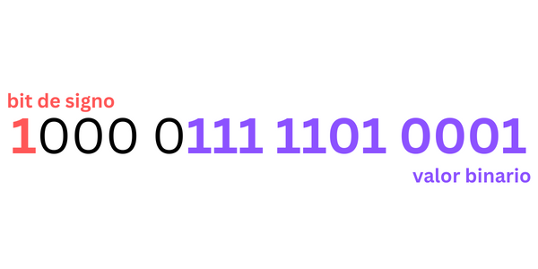

Binary convierte números de formato decimal a formato binario; con tan solo un click podrás
obtener una lista completa del procedimiento dedicado para convertir el número que hayas elegido.
También podrás recibir el resultado en los dos formatos más importantes de representación binaria:
formato de signo y magnitud y formato de 1 complementario.
¿Qué es el formato signo y magnitud?
El formato Signo/Magnitud está fundamentado en el sistema posicional binario que representa el signo del entero separado de su magnitud. Se separa un bit para representar el signo; la costumbre es asignar el valor de cero para representar positivo y uno para representar el signo negativo.

El bit de signo puede ocupar cualquier posición dentro de los bits de trabajo. En este caso el bit del signo ocupa la primera posición en los digitos binarios.
¿Qué es el formato 1 complementario?
El complemento a 1 y a 2 de un número binario son importantes porque permiten
la representación de números negativos. El método de complemento a 2 en
aritmética es comúnmente usada en computadoras para manipular números
negativos.
El complemento a 1 de un numero binario es encontrado simplemente cambiando
todos los 1s por 0s y todos los 0s por 1s.
Desarrollador